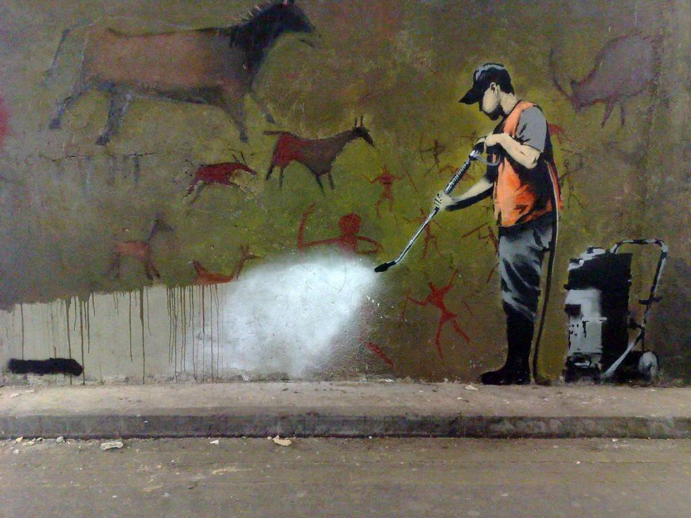

State Transitions
Getting from A to B.
For every database that has a state, there's a way to change that state. Every time you're in state s and then make a change, you're now in state s'. The history of state transitions is the history of the database. When multiple people are using this database it's important that they all agree on the current state. If they don't, in meatspace we get wars and in cyberspace we get forks.
Since in this example we have a centralized database controlled by a single operator, it's their database so they make the rules. Because they control the state they also control the state changes. Users can submit TX for consideration, but ultimately the bank decides what goes through or not.
Let's try it out and become kings of our own little hills!

Cryptoeconomics - 1.2 - State Transitions & Payment Processor Implementation.
extern crate rand;
use rand::prelude::*;
use std::collections::HashMap;
use std::collections::hash_map::DefaultHasher;
use std::hash::Hasher;
#[derive(Debug)]
struct State {
accounts: HashMap<String, Account>,
frozen_accounts: HashMap<String, Account>,
account_ids: Vec<String>,
pending_tx: Vec<TX>,
history: Vec<TX>,
debt_history: Vec<TX>,
debt_pool: i32,
}
#[derive(Debug, Clone)]
struct Account {
password: i32,
nonce: i32,
balance: i32,
}
#[derive(Debug, Clone)]
struct TX {
sender: String,
sender_password: i32,
sender_nonce: i32,
receiver: String,
amount: i32,
}
// Central Payment Processor
impl State {
/// GENERALLY USEFUL FUNCTIONS ///
// Turn stuff into &[u8] slice
pub unsafe fn any_as_u8_slice<T: Sized>(p: &T) -> &[u8] {
::std::slice::from_raw_parts(
(p as *const T) as *const u8,
::std::mem::size_of::<T>(),
)
}
// Hash &[u8] slice into a hex String
pub fn hash_u8(stuff: &[u8]) -> String {
let mut hasher = DefaultHasher::new();
hasher.write(stuff);
let digest = hasher.finish();
let hex_digest = format!("{:#X}", digest);
hex_digest
}
// Hash stuff into a hex string
pub fn hash<T>(stuff: &T) -> String {
let u8_stuff = unsafe {
State::any_as_u8_slice(stuff)
};
let hash_of_stuff = State::hash_u8(u8_stuff);
hash_of_stuff
}
/// FUNCTION TO INIT THE STATE ///
// Create a new state
pub fn new_state() -> State {
let mut new = State {
accounts: HashMap::new(),
frozen_accounts: HashMap::new(),
account_ids: Vec::new(),
pending_tx: Vec::new(),
history: Vec::new(),
debt_history: Vec::new(),
debt_pool: 0,
};
new.accounts.insert(String::from("bank"), Account { password: 0, nonce: 0, balance: 1000000 });
new
}
/// ACCOUNT FUNCTIONS ///
// Create a new account
pub fn new_account(&mut self) {
let account_id = State::hash(&thread_rng().gen_range(0, 1000000));
let account_data = Account {
password: thread_rng().gen_range(0, 1000000),
nonce: 0,
balance: 0,
};
self.account_ids.push(account_id.clone());
self.accounts.insert(account_id, account_data);
}
// Create multiple new accounts
pub fn new_accounts(&mut self,
num_accounts: i32) {
for i in 0..num_accounts {
self.new_account()
}
}
// Print account info
pub fn print_account_info(&mut self,
account_id: String) {
if let Some(x) = self.accounts.get(&account_id) {
println!("Your Account:\n{:#?}", self.accounts.get(&account_id).unwrap());
}
println!("Account not found");
}
// Print account history
pub fn print_account_history(&mut self,
account_id: String,) {
let mut account_history = Vec::new();
let list = self.history.clone();
for i in list {
if i.sender == account_id {
account_history.push(i.clone());
}
if i.receiver == account_id {
account_history.push(i.clone());
}
}
println!("\n/// Getting Account History ///");
println!("Account {} ", account_id);
println!("{:#?}", self.accounts.get(&account_id).unwrap());
println!("History:\n{:#?}", account_history);
}
// "Freeze" an account
pub fn freeze_account(&mut self,
account_id: String) {
// The end of your life savings are just a click away...
let account = self.accounts.remove_entry(&account_id).unwrap();
self.frozen_accounts.insert(account.0, account.1);
}
/// TX FUNCTIONS ///
// Create a new TX
pub fn new_user_tx(&mut self,
sender: String,
sender_password: i32,
sender_nonce: i32,
receiver: String,
amount: i32) {
let tx = TX {
sender: sender,
sender_password: sender_password,
sender_nonce: sender_nonce,
receiver: receiver,
amount: amount,
};
self.pending_tx.push(tx);
}
// Create a new bank TX
pub fn new_bank_tx(&mut self,
receiver: String,
amount: i32) {
// Tx is legit by default because it's from the bank so let's just process it.
let tx = TX {
sender: "bank".to_string(),
sender_password: 0,
sender_nonce: self.accounts.get("bank").unwrap().nonce,
receiver: receiver,
amount: amount,
};
// decrease the balance in the bank's debt account
self.debt_pool -= tx.amount;
// increase the balance of the reciever's account
self.accounts
.get_mut(&tx.receiver)
.unwrap()
.balance += tx.amount;
// add processed TX to history
self.history.push(tx.clone());
}
/// STATE TRANSITION FUNCTIONS ///
// Verify pending user TX
// - notice how the bank (or any hacker) gets to bypass this check
// using a bank tx rather than a user tx
pub fn process_pending_tx(&mut self) {
// check pending tx
for i in & self.pending_tx {
// check that sender is legit
if !(self.accounts.contains_key(&i.sender)) {
println!("TX ERROR: sender not found.");
continue;
}
// check that receiver is legit
if !(self.accounts.contains_key(&i.receiver)) {
println!("TX ERROR: receiver not found.");
continue;
}
// check that tx is signed by sender password
if !(i.sender_password == self.accounts
.get(&i.sender)
.unwrap()
.password) {
println!("TX ERROR: tx and sender passwords do not match.");
continue;
}
// check that the TX nonce matches the sender nonce
if !(i.sender_nonce == self.accounts
.get(&i.sender)
.unwrap()
.nonce) {
println!("TX ERROR: tx and sender nonces do not match.");
continue;
}
// check that the TX amount is >= the sender's balance
if !(i.amount <= self.accounts
.get(&i.sender)
.unwrap()
.balance) {
println!("TX ERROR: sender has insufficient balance");
continue;
}
// Tx is legit so let's process it
// decrease the balance from sender's account
self.accounts
.get_mut(&i.sender)
.unwrap()
.balance -= i.amount;
// increase sender's nonce to prevent replay glitches
self.accounts
.get_mut(&i.sender)
.unwrap()
.nonce += 1;
// increase the balance of the reciever's account
self.accounts
.get_mut(&i.receiver)
.unwrap()
.balance += i.amount;
// add processed TX to history
self.history.push(i.clone());
}
// clear pending tx
self.pending_tx = Vec::new();
}
// Arbitrary function to add funds to an account
pub fn add_funds(&mut self,
account_id: String,
amount: i32) {
// A very important function for any private and seldom audited
// for-profit enterprise. Convenient because it
// just directly changes the state of the ledger
// without going through any checks or being recorded
// in the hisroty. What could go wrong?
// https://en.wikipedia.org/wiki/Enron_scandal
if let Some(x) = self.accounts.get_mut(&account_id) {
x.balance += amount;
}
}
}
fn main() {
// Note that every function that starts with
// bank.function() is a function that only the
// centralized operator can perform. Users can
// submit TX for review, but ultimately they
// have no control. Same for viewing their
// account history or controlling if/when
// their funds are accessible. Users can
// make requests, but the central operator
// makes the rules.
// Init bank state
let mut bank = State::new_state();
println!("\n/// Initialized Bank State ///");
println!("{:#?}", &bank);
// Create some new accounts
bank.new_accounts(10);
println!("\n/// Created Some Accounts ///");
println!("{:#?}", bank);
// Init some variables for testing accounts
let test_account0 = bank.account_ids[0].clone();
let test_account1 = bank.account_ids[1].clone();
let test_account2 = bank.account_ids[2].clone();
// Add some funds to those accounts
for i in bank.accounts.values_mut() {
i.balance += 10000;
}
println!("\n/// Added Funds To Accounts ///");
println!("{:#?}", bank);
// Let's make some TX requests
for i in 0..10 {
let sender = &bank.account_ids[thread_rng().gen_range(0, bank.account_ids.len())];
let receiver = &bank.account_ids[thread_rng().gen_range(0, bank.account_ids.len())];
if sender != receiver {
bank.new_user_tx(sender.to_string(),
bank.accounts.get(sender).unwrap().password,
bank.accounts.get(sender).unwrap().nonce,
receiver.to_string(),
thread_rng().gen_range(100, 1000))
}
}
// Let's print some moneys!
for i in 0..10 {
let sender = &bank.account_ids[thread_rng().gen_range(0, bank.account_ids.len())];
let receiver = &bank.account_ids[thread_rng().gen_range(0, bank.account_ids.len())];
if sender != receiver {
bank.new_bank_tx(receiver.to_string(),
thread_rng().gen_range(100, 1000))
}
}
println!("\n/// Simulated Some TX ///");
println!("{:#?}", bank);
// Process and approve or decline pending TX
bank.process_pending_tx();
println!("\n/// Processed Pending TX ///");
println!("{:#?}", bank);
// Get the TX history for an account
bank.print_account_history(test_account0.clone());
}
But wait... there's more
- https://en.wikipedia.org/wiki/Transition_system